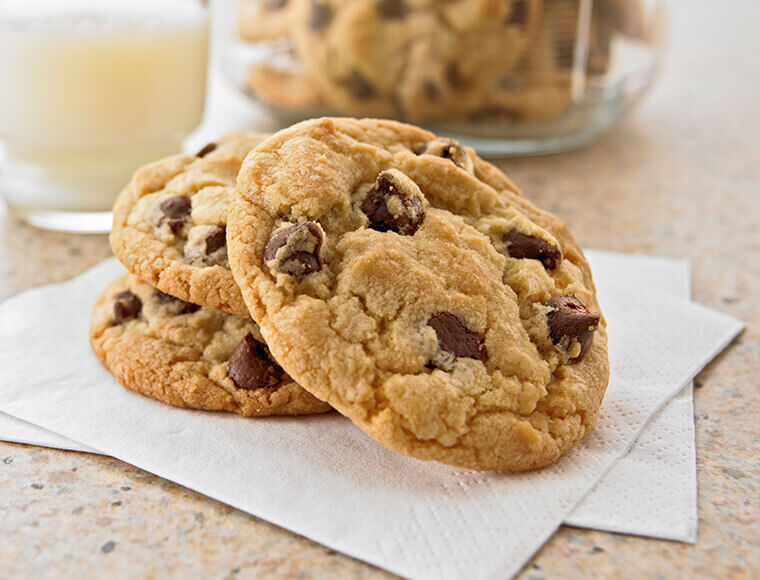
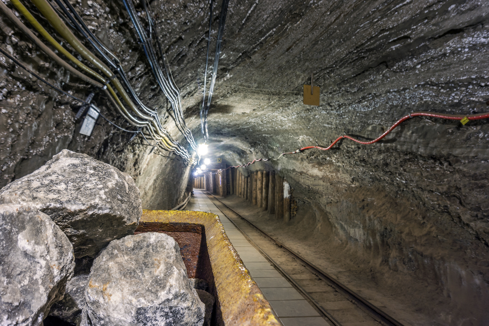
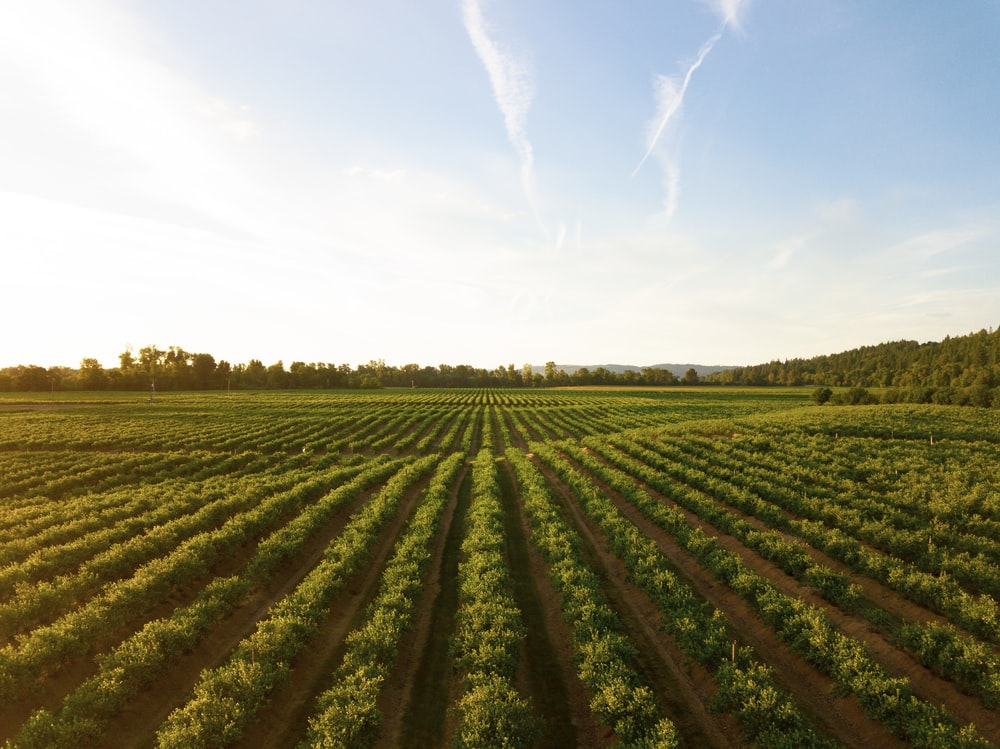

Vilka kakor Mmm :)) fortsätt tryck för att bli den bästa cookie
colector!!


Som man kan se i grotan så gräver vi ut alla kakor som har varit under
marken förvarade sen jordens begynelse och sen skapas de till nya
goadare kakor.
Här så planterar vi alla våra kakor och låter de växa på ett så
miljövänligt set som möjligt. I Cookie.inc så är våra mål att va så
miljö vänliga som möjligt och en av de här metoderna är farmer.

Kakor för en ljusare och godare framtid för nya möjligheter.